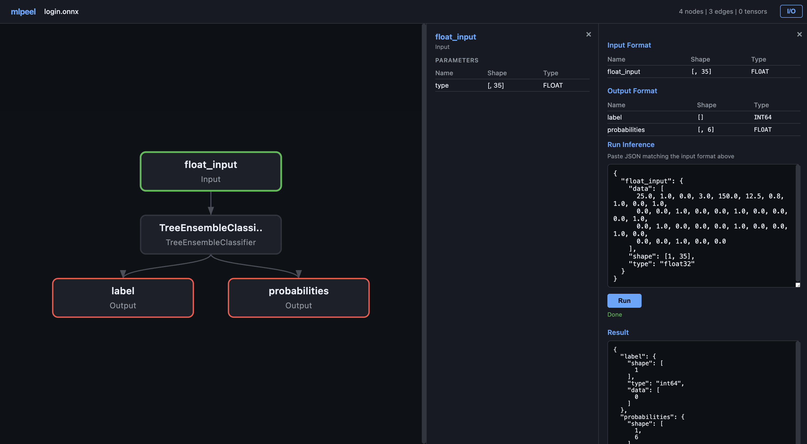

Minimal-dependency neural network model viewer for ONNX, Safetensors, and GGUF

Core viewer uses only Node.js 22+ built-ins. Inference requires onnxruntime-node.
Pan, zoom, and click nodes to inspect shapes, types, and parameters.
Format recognized from file extension or magic bytes automatically.
Dump the full model structure as JSON for scripting and automation.
# open model in browser mlpeel model.onnx # custom port mlpeel model.safetensors --port 3000 # output as JSON mlpeel model.gguf --json